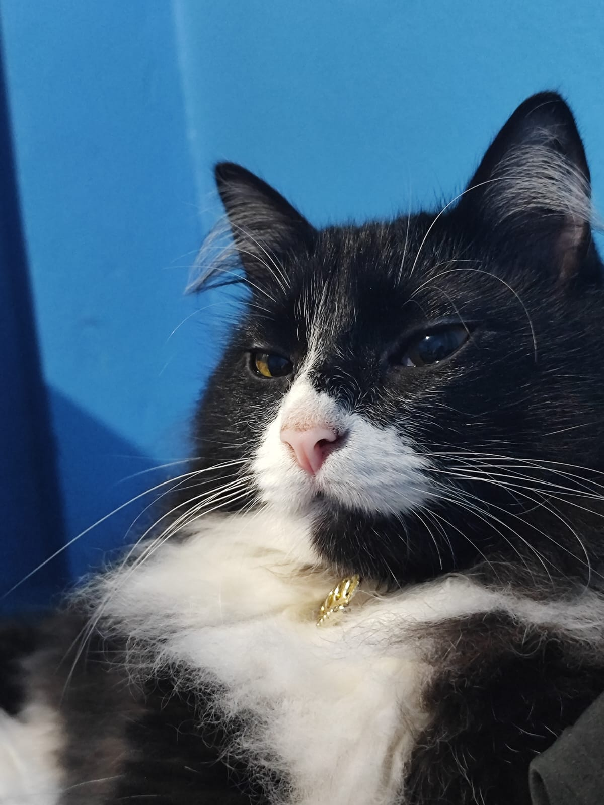

Miau... Digo, Olá!
Me chamo Hana!
Oie, meu nome é Hana e tenho 2 aninhos de idade!
Me conhe√ßa! üêæMe chamo Hana! Meu nome vem da lingua japonesa e sua tradu√ß√£o seria: flor (fofinho, n√©?)
Modo de ataque!
Sou uma felina caçadora, nenhuma presa foge das minhas garras!
Tenho até uma posição de ataque!
A curiosidade matou o gato... (mas eu ainda tô inteira, hehe)
Sou uma felina muito curiosa! Qualquer som que escuto, eu vou correndo para o lugar para ver o que é...
Todos os Oni's irão cair!
Sou uma felina que adora assistir animes!
AAAAH, Que soninho!
Sou muuuuuuito preguiçosa! Brinco bastante, mas quando deito para dormir, nada me acorda!
Meu Humano!

Por mais que eu goste de brincar de arranhar e morder meu humano de estimação, eu amo bastante ele. Sem contar que sou bem astuta. É só eu deixar ele fazer carinho em mim, que eu ganho quantos petiscos eu quiser, hehe!